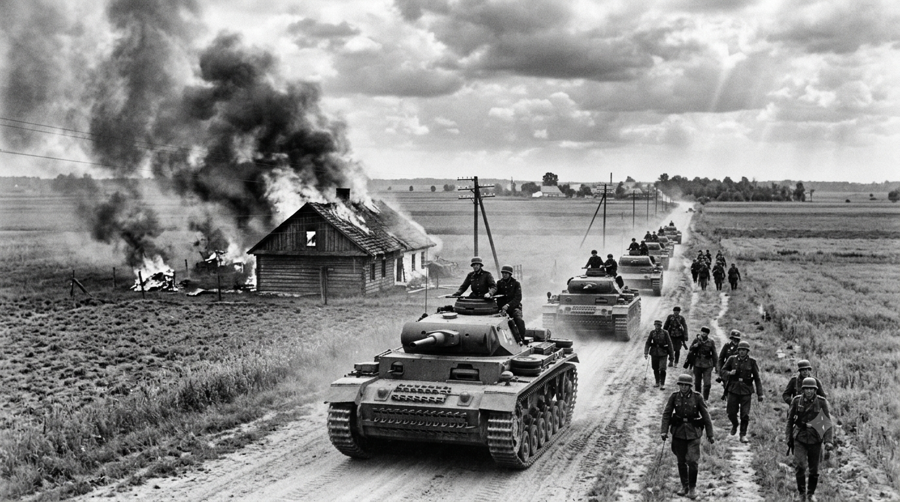
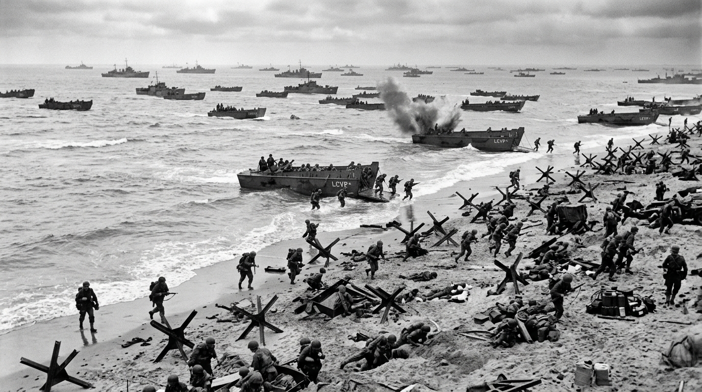
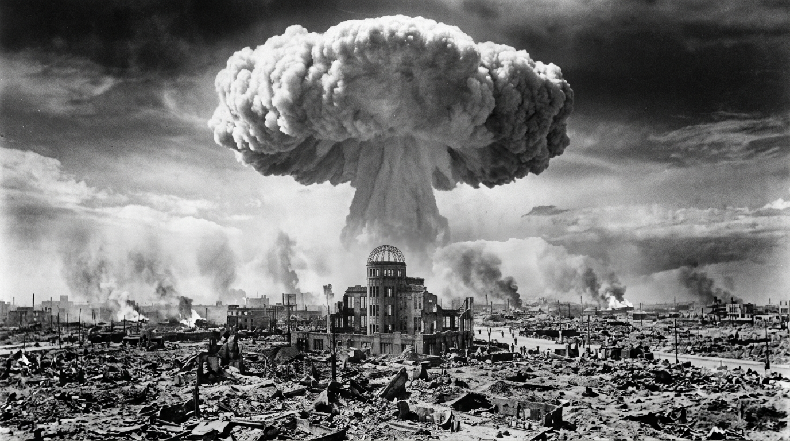

Contexto
A Segunda Guerra Mundial (1939-1945) envolveu as principais potências do mundo, divididas em Aliados e Eixo.
Principais Eventos
Blitzkrieg
Guerra-relâmpago alemã na Europa.

Dia D
Desembarque aliado na Normandia.

Hiroshima
O fim da guerra no Pacífico.

Consequências
A guerra resultou na criação da ONU e no início da Guerra Fria entre EUA e URSS.